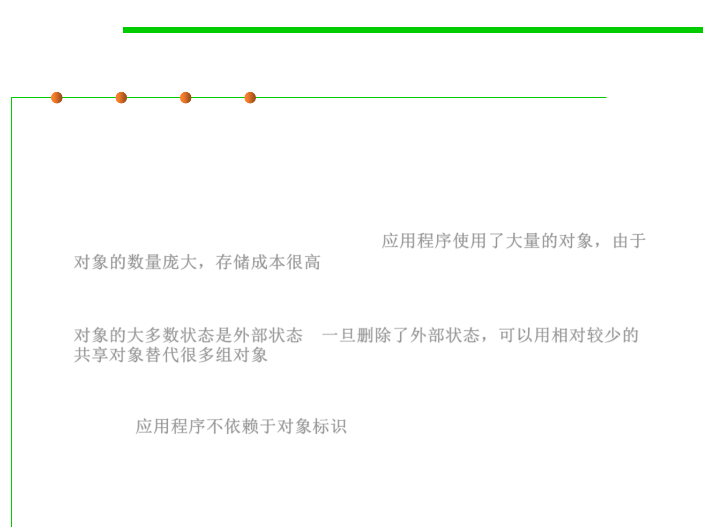

Flyweight Pattern
8.3 Code Tuning for Performance Optimization
▪ The Flyweight pattern's effectiveness depends heavily on how and
where it's used.
▪ Applicability
– An application uses a large number of objects. Storage costs are high
because of the sheer quantity of objects.应用程序使用了大量的对象，由于
对象的数量庞大，存储成本很高
– Most object state can be made extrinsic. Many groups of objects may be
replaced by relatively few shared objects once extrinsic state is removed.
对象的大多数状态是外部状态，一旦删除了外部状态，可以用相对较少的
共享对象替代很多组对象
– The application doesn‘t depend on object identity. Since flyweight objects
may be shared, identity tests will return true for conceptually distinct
objects. 应用程序不依赖于对象标识